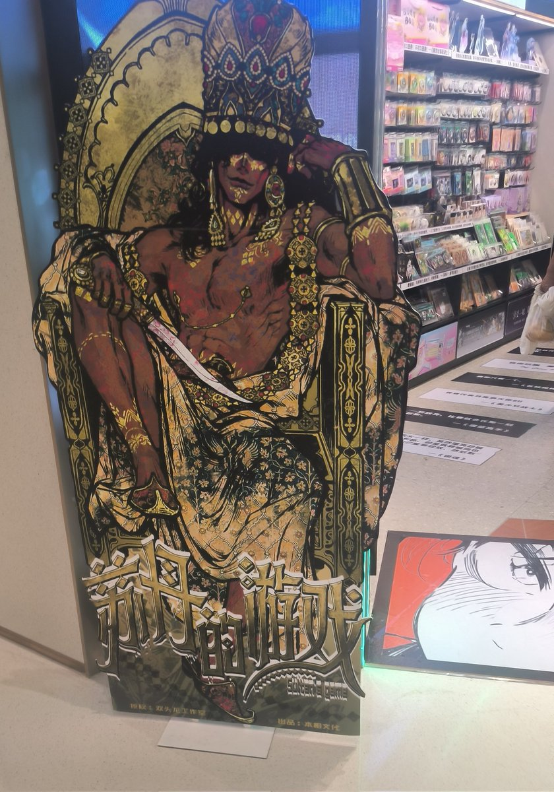

時璃風医詩🍥🌈
@hagishigure
@LING_bdnit 。請讓人類幼崽評價什麼是適合，什麼是不適合。
請閱讀《動物行為学》。
你的思維不是幼崽的思維。
不違法律不侵犯他者自由就是適合。這是消極自由的根本。

泠栀子没有在小红书骂不给猫吃进口猫粮就是虐猫的逆天养猫人是傻逼并且给我两只臭猫收拾烂摊子帮邻居洗地毯
@LING_bdnit
（补档）我觉得这种内容属于NSFW，不适合出现在这种小孩巨多的商场里
然后如果你觉得我劳保那就是你对，我确实是老封建顺直男性压抑媚男姐宅男哥反同人
🏳🏳🏳🏳🏳 https://t.co/027PsTyX0p